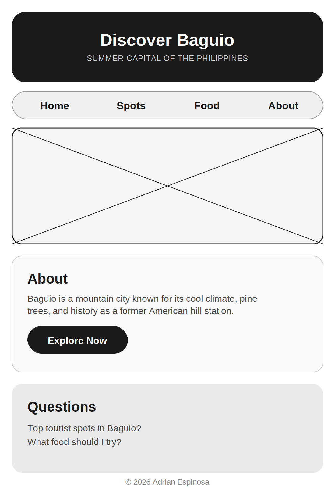
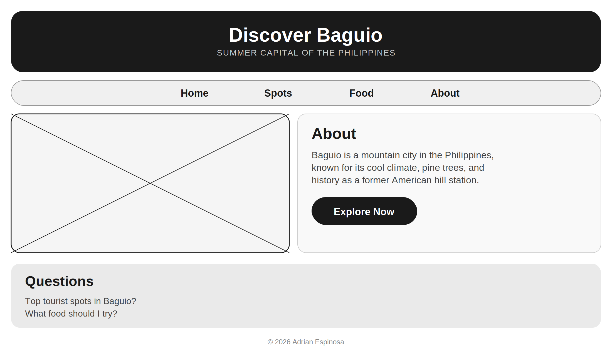

Name: Discover Baguio: Summer Capital of the Philippines
This name highlights Baguio's identity as a cool-climate mountain city known for its pine trees, culture, and history as a favorite vacation destination.
Optional Domain: discoverbaguio.ph
The website will serve as a digital guide for tourists planning a trip to Baguio City, providing information on tourist spots, local culture, and food. It aims to promote tourism and help visitors plan their itinerary easily.
These colors reflect the cool, misty, and pine-covered atmosphere of the city.
Pine Green - used for headings and navigation (represents nature and mountains)
Misty Blue - used for buttons, accents, and highlights (evokes cool weather)
Mobile View:

Desktop View:

Baguio celebrates the Panagbenga Flower Festival every February, featuring street dancing and floral floats that showcase the Cordillera region's traditions.
© 2026 Adrian Espinosa. Located in Baguio, Philippines.